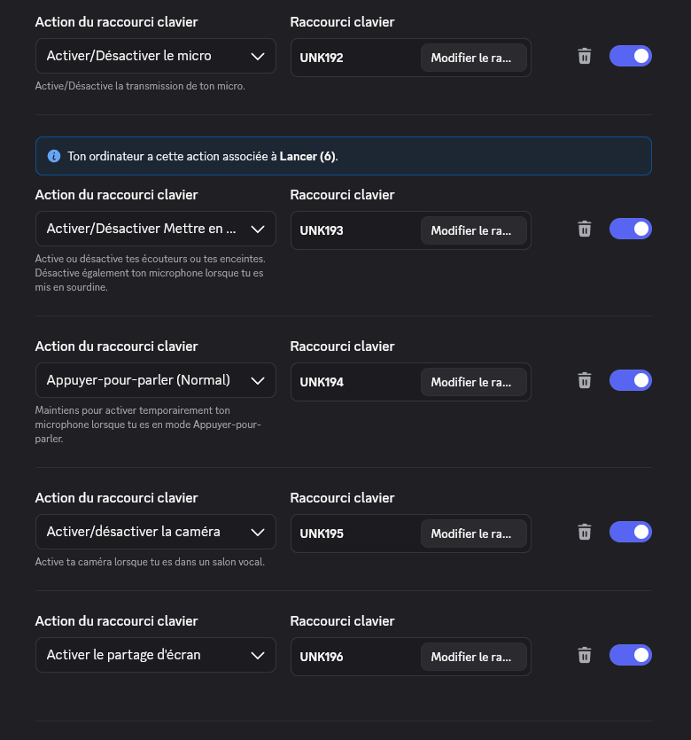

Themes
A theme gives the 12 keys of the Stream Deck module a ready-made layout, for example to control a chat application. It is a .gctheme file that Bosun installs as a new tab. This feature has been confirmed on the module, on Linux and on Windows.
Install a theme
In Bosun, open the “+” tab and choose “Install a theme file…”. The file is checked completely first, nothing of yours is replaced, and Bosun shows the new tab on screen and on the module. Only install themes from people you trust.
Make and share your own
Build a tab with Bosun as usual, then use “Export as a theme file…” in the tab's editor. You choose the author and the licence; pictures are shrunk to what a key needs. Advanced users can write the file by hand: see the file format.
Published themes
Voice chat
By Paul Woisard, licence CC-BY-SA-4.0. Keys for a voice chat application: mute, deafen, push to talk, camera and screen share, a key that starts Discord (deb, Flatpak or Snap), and the usual play, volume and track keys. It comes with its own wallpaper for the screen. Download voice-chat.gctheme
Tested by its author on Linux with KDE Plasma and the Discord Flatpak, and on Windows. The first five keys send the keys F14 to F18, so the application must be given those shortcuts:
- In Discord, open Settings, then Keybinds, and add one keybind per action: toggle the microphone, toggle deafen, push to talk, toggle the camera, share the screen.
- On Windows, that is enough: Discord recognises F14 to F18 directly, with nothing to change in Windows' own settings. On Linux with KDE Plasma, open System Settings instead, then Shortcuts, then Discord: for each action, click its shortcut, choose “Custom” and press the matching key on the module. KDE records it as “Launch (5)” to “Launch (9)”: those are the names Linux gives these keys, and the F14 that Discord proposes by itself does not match them.
- Close the Keybinds page of Discord: Discord switches its shortcuts off while it is visible.

Paired with the module's own FPS/CPU/GPU home screen widget (automatic game detection on Linux and Windows), the camera and screen-share keys make a simple streaming setup: call controls on the module, live performance on its screen.
Submit a theme
You can propose a theme for this page. The button opens an email to contact@galleoncore.xyz; attach your .gctheme file to it. Every theme is checked by hand before it is published, and nothing is published without the author's agreement. How the submission is handled.
Submit a theme by email
Content rules
- Submit only what you made, or what you are allowed to redistribute, and state the licence (
CC-BY-SA-4.0 is the project's default for pictures).
- No logos, trademarks, characters, screenshots or footage belonging to others, and no real people without their consent. A theme can be for an application without using its logo.
- No content that is illegal, hateful, sexual or misleading, and nothing that tries to run commands: the format already refuses them.
- A theme is published under its author's name and licence, and can be withdrawn on request.
- A theme that breaks these rules is refused or removed; a rights holder can report one through contact@galleoncore.xyz.
Thèmes
Un thème donne aux 12 touches du module Stream Deck une disposition toute prête, par exemple pour piloter une application de discussion. C’est un fichier .gctheme que Bosun installe comme un nouvel onglet. Cette fonction est confirmée sur le module, sous Linux et sous Windows.
Installer un thème
Dans Bosun, ouvre l’onglet « + » et choisis « Installer un fichier de thème… ». Le fichier est d’abord vérifié en entier, rien de ce qui est à toi n’est remplacé, et Bosun affiche le nouvel onglet à l’écran et sur le module. N’installe que des thèmes de personnes de confiance.
Créer et partager les tiens
Compose un onglet avec Bosun comme d’habitude, puis utilise « Exporter en fichier de thème… » dans l’éditeur de l’onglet. Tu choisis l’auteur et la licence ; les images sont réduites à ce dont une touche a besoin. Les utilisateurs avancés peuvent écrire le fichier à la main : voir le format des fichiers.
Thèmes publiés
Voice chat
Par Paul Woisard, licence CC-BY-SA-4.0. Des touches pour une application de discussion vocale : micro, sourdine, parler, caméra et partage d’écran, une touche qui lance Discord (deb, Flatpak ou Snap), et les touches habituelles de lecture, de volume et de piste. Il vient avec son propre fond d’écran pour l’écran. Télécharger voice-chat.gctheme
Testé par son auteur sous Linux avec KDE Plasma et le Flatpak de Discord, et sous Windows. Les cinq premières touches envoient les touches F14 à F18 : il faut donner ces raccourcis à l’application.
- Dans Discord, ouvre Paramètres, puis Raccourcis clavier, et ajoute un raccourci par action : activer/désactiver le micro, la sourdine, appuyer-pour-parler, la caméra et le partage d’écran.
- Sous Windows, c’est suffisant : Discord reconnaît F14 à F18 directement, rien à changer dans les paramètres de Windows. Sous Linux avec KDE Plasma, ouvre plutôt les paramètres système, puis Raccourcis, puis Discord : pour chaque action, clique sur son raccourci, choisis « Personnalisé » et appuie sur la touche correspondante du module. KDE l’enregistre comme « Lancer (5) » à « Lancer (9) » : ce sont les noms que Linux donne à ces touches, et le F14 que Discord propose de lui-même n’y correspond pas.
- Ferme la page des raccourcis de Discord : Discord désactive ses raccourcis tant qu’elle est visible.
Associé au widget FPS/CPU/GPU de l’écran d’accueil du module (détection automatique du jeu, sous Linux et sous Windows), les touches caméra et partage d’écran forment un petit poste de streaming : les commandes de l’appel sur le module, les performances en direct sur son écran.
Proposer un thème
Tu peux proposer un thème pour cette page. Le bouton ouvre un e-mail vers contact@galleoncore.xyz ; joins-y ton fichier .gctheme. Chaque thème est vérifié à la main avant publication, et rien n’est publié sans l’accord de l’auteur. Comment la proposition est traitée.
Proposer un thème par e-mail
Règles de contenu
- Ne propose que ce que tu as créé ou as le droit de redistribuer, et indique la licence (
CC-BY-SA-4.0 est celle par défaut du projet pour les images).
- Pas de logos, marques, personnages, captures d’écran ou extraits appartenant à d’autres, ni de personnes réelles sans leur accord. Un thème peut être fait pour une application sans utiliser son logo.
- Aucun contenu illégal, haineux, sexuel ou trompeur, et rien qui tente d’exécuter des commandes : le format les refuse déjà.
- Un thème est publié sous le nom et la licence de son auteur, et peut être retiré sur demande.
- Un thème qui enfreint ces règles est refusé ou retiré ; un ayant droit peut en signaler un via contact@galleoncore.xyz.
Themen
Ein Thema gibt den 12 Tasten des Stream-Deck-Moduls eine fertige Belegung, zum Beispiel zur Steuerung einer Chat-Anwendung. Es ist eine .gctheme-Datei, die Bosun als neuen Tab installiert. Diese Funktion ist auf dem Modul bestätigt, unter Linux und unter Windows.
Ein Thema installieren
Öffne in Bosun den „+“-Tab und wähle „Themendatei installieren…“. Die Datei wird zuerst vollständig geprüft, nichts von dir wird ersetzt, und Bosun zeigt den neuen Tab auf dem Bildschirm und auf dem Modul. Installiere nur Themen von vertrauenswürdigen Personen.
Eigene Themen erstellen und teilen
Baue einen Tab wie gewohnt mit Bosun und nutze dann „Als Themendatei exportieren…“ im Editor des Tabs. Du wählst Autor und Lizenz; Bilder werden auf das verkleinert, was eine Taste braucht. Fortgeschrittene können die Datei von Hand schreiben: siehe das Dateiformat.
Veröffentlichte Themen
Voice chat
Von Paul Woisard, Lizenz CC-BY-SA-4.0. Tasten für eine Sprachchat-Anwendung: Mikrofon, Taubschaltung, Sprechtaste, Kamera und Bildschirmfreigabe, eine Taste, die Discord startet (deb, Flatpak oder Snap), und die üblichen Tasten für Wiedergabe, Lautstärke und Titel. Es bringt ein eigenes Hintergrundbild für den Bildschirm mit. voice-chat.gctheme herunterladen
Vom Autor unter Linux mit KDE Plasma und dem Discord-Flatpak getestet, und unter Windows. Die ersten fünf Tasten senden F14 bis F18; die Anwendung muss diese Tastenkürzel bekommen:
- Öffne in Discord die Einstellungen, dann die Tastenkürzel, und füge je Aktion ein Kürzel hinzu: Mikrofon umschalten, Taubschaltung, Sprechtaste, Kamera, Bildschirm teilen.
- Unter Windows reicht das: Discord erkennt F14 bis F18 direkt, ohne etwas in den Windows-Einstellungen zu ändern. Öffne unter Linux mit KDE Plasma stattdessen die KDE-Systemeinstellungen, dann Kurzbefehle, dann Discord: Klicke bei jeder Aktion auf ihr Kürzel, wähle „Benutzerdefiniert“ und drücke die passende Taste am Modul. KDE zeichnet sie als „Launch (5)“ bis „Launch (9)“ auf: So nennt Linux diese Tasten, und das F14, das Discord selbst vorschlägt, passt dazu nicht.
- Schließe die Seite mit den Tastenkürzeln in Discord: Discord schaltet seine Kürzel aus, solange sie sichtbar ist.
Zusammen mit dem FPS/CPU/GPU-Widget des Startbildschirms am Modul (automatische Spielerkennung unter Linux und Windows) ergeben die Kamera- und Bildschirmfreigabe-Tasten einen einfachen Streaming-Arbeitsplatz: die Gesprächssteuerung am Modul, die Leistung live auf seinem Bildschirm.
Ein Thema einreichen
Du kannst ein Thema für diese Seite vorschlagen. Die Schaltfläche öffnet eine E-Mail an contact@galleoncore.xyz; hänge deine .gctheme-Datei an. Jedes Thema wird vor der Veröffentlichung von Hand geprüft, und nichts wird ohne Zustimmung des Autors veröffentlicht. Wie die Einreichung behandelt wird.
Thema per E-Mail einreichen
Inhaltsregeln
- Reiche nur ein, was du selbst erstellt hast oder weitergeben darfst, und nenne die Lizenz (
CC-BY-SA-4.0 ist die Standardlizenz des Projekts für Bilder).
- Keine Logos, Marken, Figuren, Screenshots oder Filmausschnitte anderer und keine realen Personen ohne deren Einwilligung. Ein Thema kann für eine Anwendung gemacht sein, ohne deren Logo zu verwenden.
- Keine rechtswidrigen, hasserfüllten, sexuellen oder irreführenden Inhalte und nichts, was Befehle auszuführen versucht: Das Format lehnt sie bereits ab.
- Ein Thema wird unter dem Namen und der Lizenz seines Autors veröffentlicht und kann auf Wunsch zurückgezogen werden.
- Ein Thema, das gegen diese Regeln verstößt, wird abgelehnt oder entfernt; Rechteinhaber können eines über contact@galleoncore.xyz melden.
Temas
Un tema da a las 12 teclas del módulo Stream Deck una disposición ya preparada, por ejemplo para controlar una aplicación de chat. Es un archivo .gctheme que Bosun instala como una pestaña nueva. Esta función está confirmada en el módulo, en Linux y en Windows.
Instalar un tema
En Bosun, abre la pestaña «+» y elige «Instalar un archivo de tema…». El archivo se comprueba primero por completo, no se sustituye nada tuyo, y Bosun muestra la pestaña nueva en pantalla y en el módulo. Instala solo temas de personas de confianza.
Crear y compartir los tuyos
Compón una pestaña con Bosun como de costumbre y usa después «Exportar como archivo de tema…» en el editor de la pestaña. Eliges el autor y la licencia; las imágenes se reducen a lo que necesita una tecla. Los usuarios avanzados pueden escribir el archivo a mano: consulta el formato de archivo.
Temas publicados
Voice chat
De Paul Woisard, licencia CC-BY-SA-4.0. Teclas para una aplicación de chat de voz: micrófono, ensordecer, pulsar para hablar, cámara y compartir pantalla, una tecla que inicia Discord (deb, Flatpak o Snap) y las teclas habituales de reproducción, volumen y pista. Incluye su propio fondo de pantalla para la pantalla. Descargar voice-chat.gctheme
Probado por su autor en Linux con KDE Plasma y el Flatpak de Discord, y en Windows. Las cinco primeras teclas envían F14 a F18, así que hay que dar esos atajos a la aplicación:
- En Discord, abre Ajustes, luego Atajos de teclado, y añade un atajo por acción: activar o desactivar el micrófono, ensordecer, pulsar para hablar, la cámara y compartir pantalla.
- En Windows basta con esto: Discord reconoce F14 a F18 directamente, sin nada que cambiar en los ajustes de Windows. En Linux con KDE Plasma, abre en cambio la configuración del sistema de KDE, luego Atajos, luego Discord: para cada acción, haz clic en su atajo, elige «Personalizado» y pulsa la tecla correspondiente del módulo. KDE la registra como «Launch (5)» a «Launch (9)»: son los nombres que Linux da a estas teclas, y el F14 que Discord propone por sí mismo no coincide con ellos.
- Cierra la página de atajos de Discord: Discord desactiva sus atajos mientras está visible.
Junto con el widget de FPS/CPU/GPU de la pantalla de inicio del módulo (detección automática del juego en Linux y Windows), las teclas de cámara y compartir pantalla forman un pequeño puesto de streaming: los controles de la llamada en el módulo, el rendimiento en directo en su pantalla.
Proponer un tema
Puedes proponer un tema para esta página. El botón abre un correo a contact@galleoncore.xyz; adjunta tu archivo .gctheme. Cada tema se revisa a mano antes de publicarlo, y no se publica nada sin el acuerdo del autor. Cómo se trata la propuesta.
Proponer un tema por correo
Reglas de contenido
- Propón solo lo que hayas creado o puedas redistribuir, e indica la licencia (
CC-BY-SA-4.0 es la predeterminada del proyecto para las imágenes).
- Sin logotipos, marcas, personajes, capturas de pantalla ni imágenes de otros, ni personas reales sin su consentimiento. Un tema puede estar hecho para una aplicación sin usar su logotipo.
- Ningún contenido ilegal, de odio, sexual o engañoso, y nada que intente ejecutar comandos: el formato ya los rechaza.
- Un tema se publica con el nombre y la licencia de su autor, y puede retirarse a petición.
- Un tema que incumpla estas reglas se rechaza o se retira; un titular de derechos puede denunciar uno a través de contact@galleoncore.xyz.